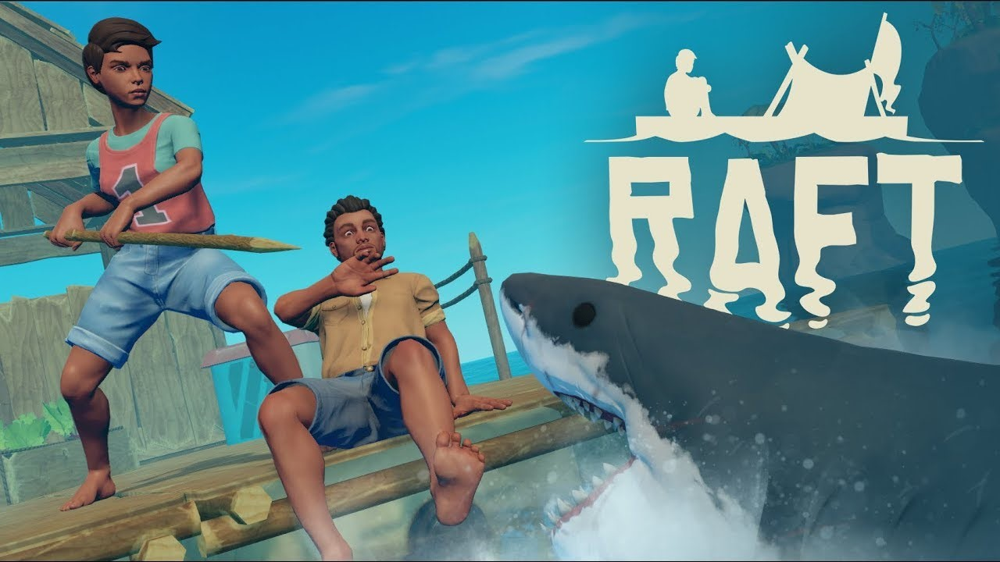
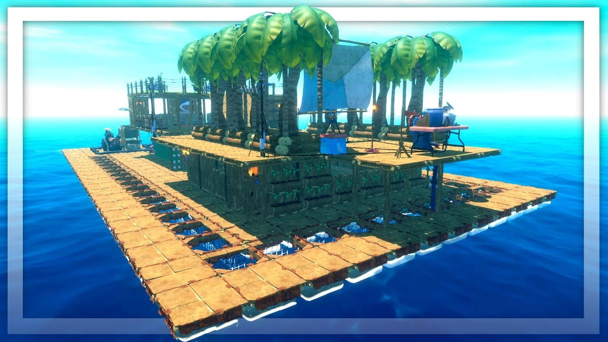

Raft
Raft is a video game from 2018 that was developed by Redbeet Interactive and published by Axolot Games. The game is played from the first-person perspective and can be played either in the Single Player Mode or Multiplayer Mode. With the latter, the server is automatically provided by the game and the game takes place in co-op mode.
At the start, the player starts on a raft in the middle of an ocean. The player starts with only a hook with which they can fish barrels, wood, palm fronds, plastic, and other objects out of the water. The player can leave the raft and collect things while swimming, but must be careful as the raft can get swept away by the current and the player can be attacked or killed by the shark who is always near the raft. Using a crafting system, the player can use the collected content to assemble and research new items and to expand and improve the raft. For example, tools, weapons and nets can be manufactured, control and guidance of the raft can be improved, technical systems can be manufactured and purely visual changes can be made. The player also needs to manage basic needs like hunger and thirst by catching or growing food and purifying water to drink. During the game, the raft may pass by islands which the player can explore to get special items and resources. The player can also dive in coastal regions and collect special items.
